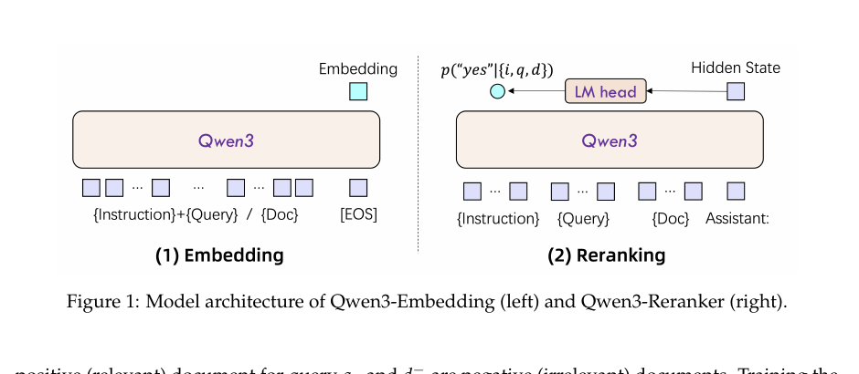
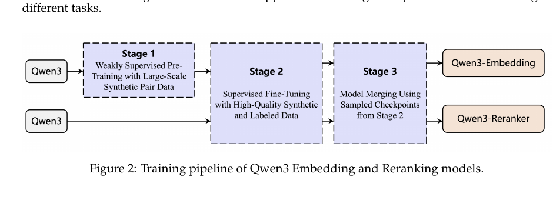

一套把 Embedding 与 Reranker 一起做深的基础模型方案： 用 Qwen3 backbone、多阶段训练和模型融合，把多语种、代码检索和复杂检索任务一起推高。
在 RAG 和 agent 系统里，召回质量、跨语言能力、代码理解和 rerank 精排已经成为同一个系统问题。
先用 embedding 找到高召回候选，覆盖更多相关文档。
再用 reranker 对候选进行点式判断，把最相关内容顶上来。
不是只做英文 leaderboard，而是把 MMTEB、CMTEB 和代码检索一并拉齐。
从 0.6B 到 8B 覆盖轻量部署、平衡型检索和旗舰性能场景。

输入形态是 `{Instruction} + {Query}` 与 `{Doc}`，最终取末层隐藏状态得到向量表示。
把 query、doc 和 instruction 拼进单个上下文，转成 “yes / no” 的相关性判断。
全系支持 32K context；embedding 支持 MRL custom dimension； embedding 和 reranker 都支持 instruction-aware 输入。
论文没有停留在常规弱监督，而是用 Qwen3-32B 参与生成多任务、多语言、高可控的训练数据。

论文最强信号是：这不是只在一个榜单上领先，而是在 multilingual、中文、英文和 code retrieval 上都形成一致趋势。
上图里浅红基线对应论文中引用的商业 API 最强参考值，深蓝是 Qwen3-Embedding-8B。代码检索提升最明显。
从 Table 4 看，4B/8B reranker 对复杂 retrieval 和 code retrieval 的提升比较稳定， 说明这条产品线不是陪衬，而是真正补齐了“召回后精排”能力。
这份 slide 采用章谱生个人模板库中的 T3 浅蓝工程路演 风格， 目标不是复刻论文版式，而是把读者真正需要记住的方法、结果和工程判断讲清楚。